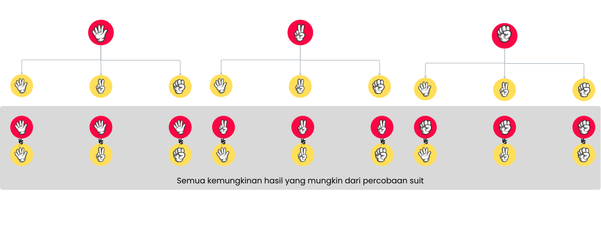

Siswa dapat menentukan titik sampel dan ruang sampel suatu kejadian sederhana
Experience
Apakah kalian suka bermain gim?
Saat memainkan sebuah permainan, apakah kalian ingin menang?
Tahukah kalian bahwa beberapa gim yang kalian mainkan sehari-hari dapat dianalisis untuk menentukan seberapa besar kemungkinan kalian memenangkan permainan tersebut?
Mari kita pelajari lebih lanjut bersama Zuri!
Permainan suit "batu, gunting, dan kertas" adalah permian tradisional yang biasanya dimaiankan oleh dua orang dengan memilih salah satu dari tiga simbol:
batu, gunting, atau kertas. Batu dilambangkan dengan kepalan tangan, gunting dengan dua jari membentuk huruf "V", dan kertas dengan telapak tangan terbuka.
Simbol - simbol tersebut dihubungkan dengan aturan menang kalah yang kreatif:
Batu mengalahkan gunting (karena batu dapat menghancurkan gunting),
Gunting mengalahkan kertas (karena gunting dapat memotong kertas),
Kertas mengalahkan batu (karena kertas dapat membungkus batu).
Berapa banyak pilihan yang dimiliki setiap pemain?
Apa saja pilihan tersebut?
Zuri mengajakmu untuk mendaftarkan semua kemungkinan hasil yang diperoleh jika memainkan permainan Batu, Gunting, dan Kertas yang dimainkan oleh 2 orang pemain.
Coba lihat kemungkinan hasilnya dengan bermaian pada permainan berikut:
Semua kemungkinan hasil dari percobaan permainan suit 2 orang
Seret elemen "Batu", "Gunting", atau "Kertas" ke setiap kotak kosong.
Setiap elemen dapat digunakan hingga tiga kali.
Setiap kotak kosong hanya dapat diisi dengan dua elemen.
Setelah semua kotak kosong terisi, tekan tombol "Periksa Jawaban" untuk mengecek hasilmu.
Jika ingin mencoba ulang, tekan tombol "Mulai Kembali" untuk mengosongkan kotak dan memulai dari awal.
Jika jawabanmu belum benar, teruslah mencoba hingga semua kotak terisi dengan kombinasi yang tepat.
Setelah berhasil, kamu dapat melanjutkan ke permainan berikutnya.
Selamat Mencoba!
Batu
Gunting
Kertas
Batu
Gunting
Kertas
Selanjutnya bantu Zuri untuk menentukan pemenang dari setiap kemungkinan hasil yang diperoleh pada permainan sebelumnya.
Permainan
Seret elemen "Batu", "Gunting", atau "Kertas" ke area yang sesuai untuk membentuk ruang sampel.
Misalkan P1: Pemain 1 dan P2: Pemain 2.
Himpunana manakah yang menujjukkan daftar semua kemungkinan hasil suit dimana Pemain 1 menang?
Berapa banyak kemungkinan hasil dari permainan suit dimana Pemain 1 menang?
Berapa banyak kemungkinan hasil dari permainan suit dimana mendaptkan hasil seri?
Berapa banyak kemungkinan hasil dari permainan suit dimana Pemain 2 menang?
Languange
Halo teman-teman, Terima kasih sudah mengikuti tahap Experince seru kita.
Sekarang ayo kita baca percakapan di bawah.
Tekan tombol untuk melihat pesan
Istilah
Percobaan
Percobaan adalah aktivitas atau kegiatan yang mempunyai hasil yang dapat di amati.
Ruang Sampel
Ruang Sampel adalah himpunan dari semua hasil yang mungkin dari suatu percobaan. Setiap hasil tunggal yang mungkin disebut titik sampel.
Kejadian
Kejadian adalah himpunan yang memuat hasil percobaan dengan kriteria tertentu, sehingga kejadian adalah himpunan bagian dari ruang sampel.
Picture
Sebelumnya kita telah mempelajari bagaimana mendaftarkan ruang sampel dari suatu percobaan menggunakan bantuan tabel.
Nah, pada tahap ini kita akan melihat cara mendaftrakan ruang sampel dari suatu percobaan dengan cara lain
Diagram Pohon
Diagram pohon adalah cara yang sangat membantu untuk melihat semua kemungkinan hasil dalam percobaan.
Diagram pohon di bawah memperlihatkan semua kemungkinan hasil dari percobaan permainan suit yang dimaikan 2 orang.

Berapa banyak ruang sampel dari percobaan permainan suit yang dimainkan 2 orang?
Symbol
Cara terakhir untuk mendftarkan ruang sampel adalah dengan mendaftarkan satu
per satu. Jika kita daftarkan, ruang sampel dari percobaan ini terlihat seperti ini:
Ruang Sampel yang disajikan dalam bentuk himpunan
Ruang Sampel dari percobaan permaianan suit 2 orang (P1: Pemaian 1, P2: Pemaian 2):
Kita telah mengetahui semua anggota dari ruang sampel dari permainan suit yang dimaikan oleh dua orang.
Banyak anggota ruang sampel disimbolkan dengan n(S).
Jadi, untuk percobaan permainan suit dua orang, n(S)= 9.
Sedangakan untuk suatu kejadian A,
Banyak anggota kejadian A dapat disimbolkan dengan n(A).
Misalkan A = Kejadian hasil permiainan seri dari percobaan suit 2 oarang, maka n(A) = 3.
Application
Tren Fahion
Di sebuah toko sepatu, setiap pembelian satu pasang sepatu akan disertai bonus dua pasang tali sepatu gratis.
Pembeli dapat memilih dari dua pilihan warna dasar tali (hitam dan putih) serta tiga pilihan warna lainnya
(merah, biru, dan hijau). Setiap pembeli dapat membuat kombinasi satu tali warna dasar dengan satu tali berwarna.
{
}
Pewarisan Sifat Mahluk Hidup (Persilangan Monohohibrid)
Pada suatu jenis tanaman, warna bunga ditentukan oleh sifat genetik.
Merah (R) bersifat dominan
Putih (r) bersifat resesif
Perhatikan persilangan bunga merah yang Genotip: (RR) dengan bungan putih yang Genootip: (rr)
Selanjutnya anak Genarasi 2 akan berasal dari persilangan antara generasi 1 yang bergenotip: (Rr) dengan genootip: (r)
seperti pada gambar di bawah:
Tentukan ruang sampel dari percobaan persilangan antara generasi 1 di atas:
{
}
Berdasarkan ruang sampel percobaan persilangan antara genarasi 1. Tentukan Kejadian bunga genarasi 2 berwarna putih?
{
}
Perbandingan banyaknya anggota kejadian bunga generasi 2 berwarna putih dengan banyaknya anggota ruang sampel percobaan persilangan antara generasi 1 adalah?